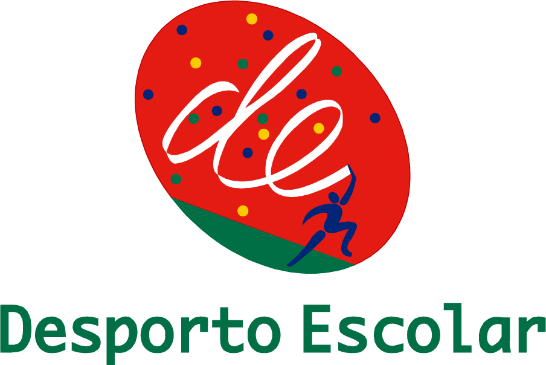
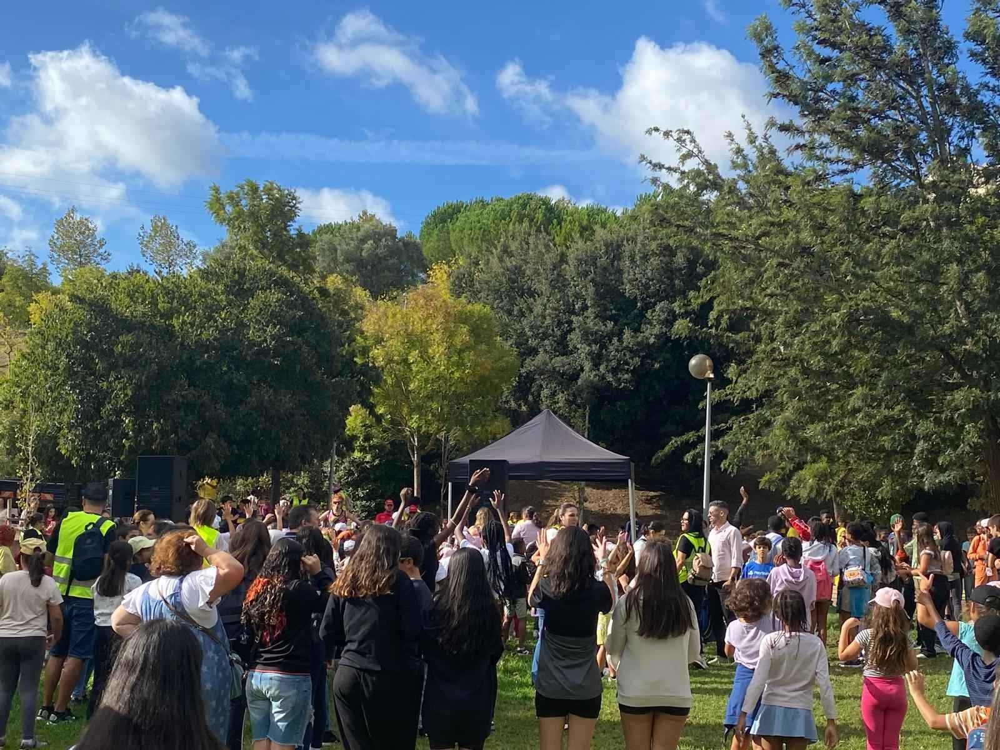

Dia Europeu do Desporto:

"Tendo em conta que as crianças e jovens adquirem,
nesta etapa da vida, as bases da sua literacia motora
e adotam hábitos de vida saudáveis, a Semana Europeia do
Desporto em Portugal tem um dia reservado exclusivamente para
as Escolas, o Dia Europeu do Desporto na Escola, a exemplo do
que acontece em 42 países. Este ano, o dia foi celebrado a 27 de Setembro."
-Site oficial do desporto escolar

Além de incentivar as atividades habituais do Desporto Escolar,
foi proposto às escolas que se unissem a este dia, estimulando
também a realização de outras atividades recreativas que proporcionem
experiências pedagógicas positivas por meio do movimento, tanto para os
estudantes quanto para a comunidade educativa em geral.
O Dia Europeu do Desporto na Escola - European School Sport Day (ESSD),
é um projeto co-financiado pelo Programa Erasmus+ Desporto, coordenado
a nível europeu pela Hungarian School Sport Federation, contando com a
participação de 42 países.

Tem como principal objetivo a promoção da prática de Educação Física
nos estabelecimentos de ensino, facilitando o desenvolvimento das competências
sociais e a inclusão dos alunos no contexto da comunidade educativa. Visa ainda
a promoção e a consciencialização sobre a importância da adoção de um estilo de
vida ativo e saudável.
É comemorado através da realização de um dia aberto que inclui desportos, jogos
e brincadeiras e, pressupõe a realização de pelo menos 120 minutos de atividades
com o objetivo de motivar as crianças e os jovens a serem mais ativos, promovendo
a sua participação em atividades físicas e desportivas.
Carregue na imagem para ser direcionado para a página ofícial do evento!
Atividades:
|


{kind=link}